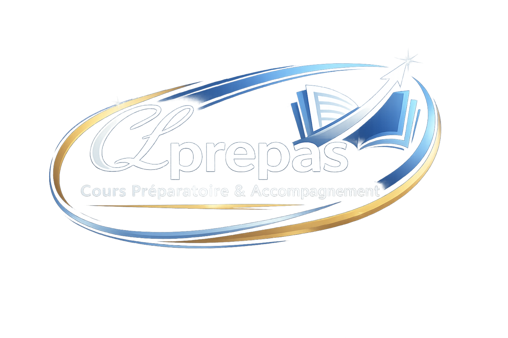
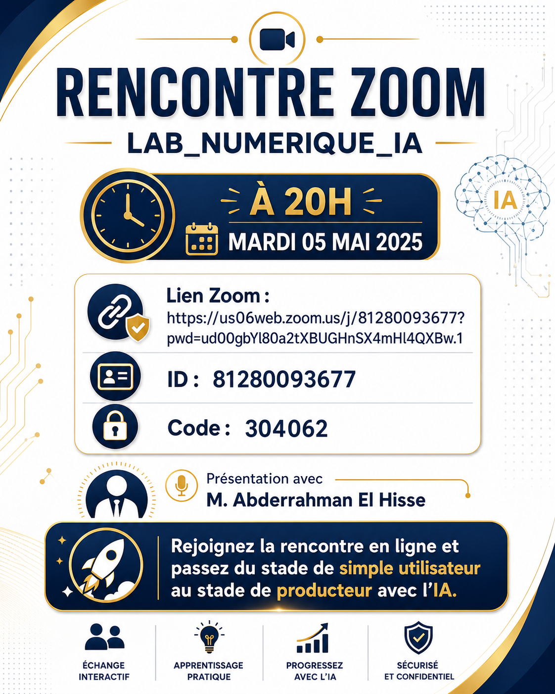
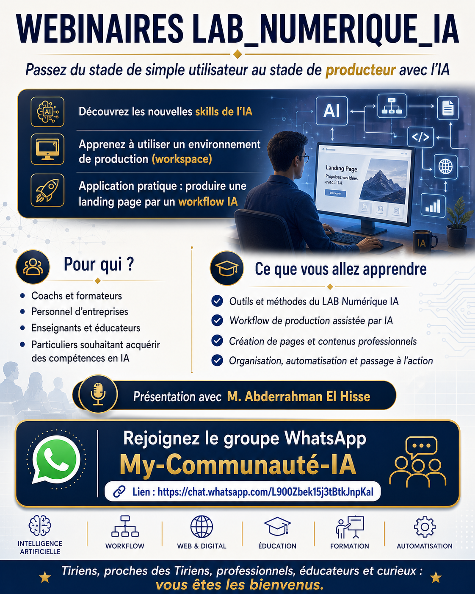

Fichiers dispersés
Les essais restent dans des brouillons difficiles à réutiliser.

LAB-NUM-CTM S’inscrireWebinaire pratique
Passez de l’usage simple de l’IA à une production organisée : idée, page web, versionnement, GitHub et publication.
Le problème
Beaucoup d’enseignants, coachs et formateurs savent demander une réponse à un outil d’IA. Le vrai saut consiste à transformer cette réponse en projet clair, organisé, versionné et partageable.
Les essais restent dans des brouillons difficiles à réutiliser.
On ne sait plus quelle modification a apporté quel résultat.
Le passage vers GitHub ou une page en ligne manque de repères.
La vision
Le webinaire propose une démarche simple : clarifier l’objectif, créer les fichiers, améliorer la page, enregistrer les étapes avec Git, puis préparer le partage sur GitHub.
Les outils
L’espace de travail pour organiser les fichiers, lire le code et construire la landing page.
L’assistant de production pour transformer le guide source en fichiers concrets et itérer vite.
Le système de versionnement qui garde une trace claire des étapes importantes.
La plateforme pour partager le projet, collaborer et préparer la publication.
L’outil de contrôle pour tester le rendu local, les liens, le responsive et les messages.
La méthode
Identifier le public, le message central et les sections utiles.
Créer la page avec HTML, CSS et JavaScript sans framework lourd.
Ouvrir la page dans le navigateur et contrôler le rendu mobile.
Faire des commits lisibles à chaque étape importante.
Préparer le dépôt GitHub et une version publiable.
Témoignage
Un extrait audio pour mieux comprendre l’intérêt du LAB-NUM-CTM et la valeur pratique du webinaire.
Ce que vous allez produire
À la fin, vous repartez avec une structure de projet claire, une page fonctionnelle, des données séparées, une documentation courte et une logique de commits exploitable.
Supports visuels


FAQ
Non. Le format est conçu pour comprendre la logique du projet et produire pas à pas une première version exploitable.
VS Code et Git sont les bases. Un compte GitHub est recommandé pour partager le résultat après le webinaire.
Une landing page responsive, des fichiers organisés, une documentation courte et une logique de commits claire.
Non. La page repose sur HTML, CSS et JavaScript vanilla afin de rester légère, lisible et facile à adapter.
Appel à l’action
Un format pratique pour passer de l’idée à une page web versionnée, sans lourdeur technique.